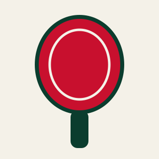
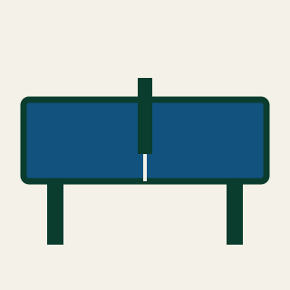
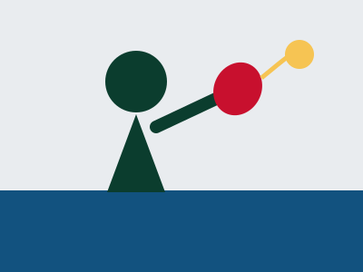
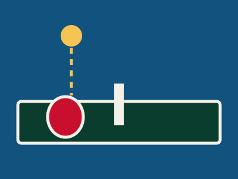
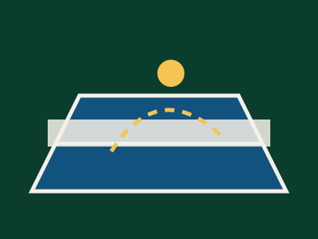
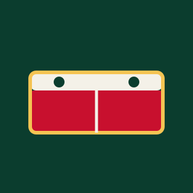

Meet your next favorite game.
My earlier projects explored the equipment, strokes and rhythm of table tennis. This collection brings those ideas together: a red paddle, a bouncing ball and the small moments that make a rally fun. Each illustration is a different piece of the game I enjoy.
Start with the equipment, follow the ball through a serve, then explore the exchanges across the net. Whether I am practicing a forehand or playing a friendly match, I like how every rally offers another chance to learn. These nine illustrations share that journey from the first paddle to the final point.







